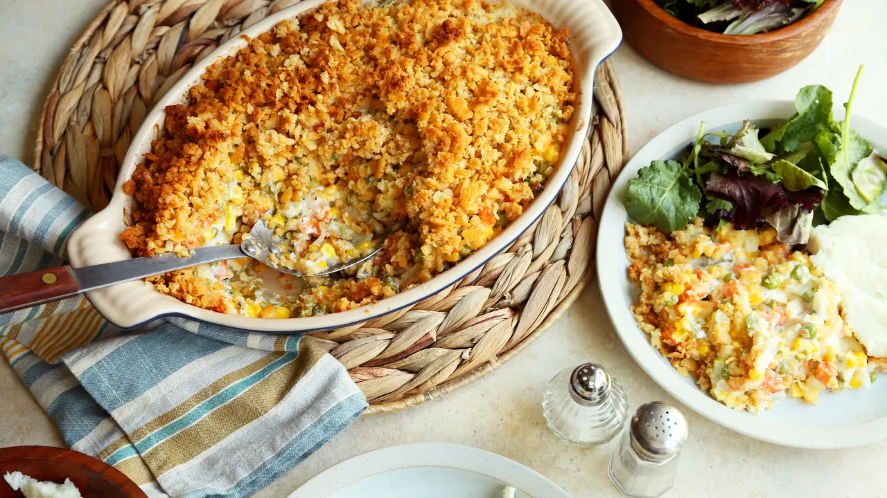
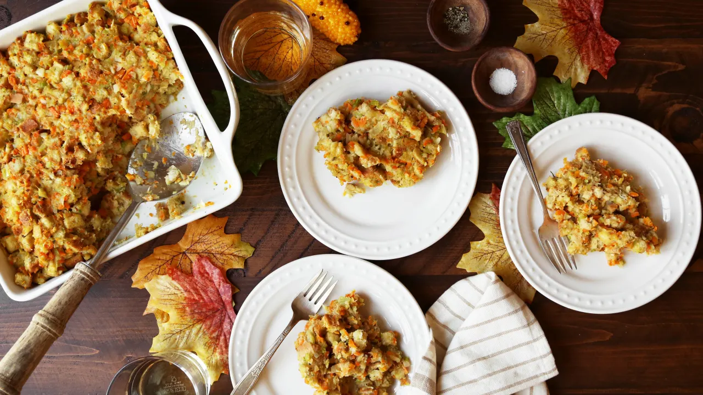

Best Thanksgiving Recipes to Make Ahead of Time
Alleviate Thanksgiving day stress by preparing the best of our make-ahead holiday dishes to save you time and oven space.
Doctor Boxed Stuffing Mix
With turkey and pie prep, who has time for from-scratch stuffing? Skip the stress and use these brilliant shortcut ideas.
Kim's Sweet Potato Casserole

Amazing sweet potato casserole! I made it with the marshmallows and everyone was so delightfully surprised to see the pecans beneath! It was truly tasty treat that you could only indulge in once a year!